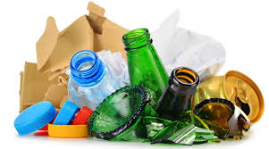

Todos os anos o Brasil produz cerca de 37 milhões de toneladas de resíduos orgânicos, porém apenas 1% desse total é descartado e reaproveitado, sendo que esse tipo de resíduo, quando em decomposição, emite gás metano, nocivo a atmosfera.
A população mundial vem crescendo cada dia mais, hoje em dia somos mais de 8 bilhões de pessoas no planeta, e suas consequências de uma grande quantidade de necessidades humanos está tornando a vida na terra inadequada.
Com cada dia mais pessoas no mundo, a necessidade de se alimentar também está crescendo de forma diretamente proporcional ao número de pessoas, e o desperdício vem sendo uma pauta principal nos últimos anos
A população mundial vem crescendo cada dia mais, hoje em dia somos mais de 8 bilhões de pessoas no planeta, e suas consequências de uma grande quantidade de necessidades humanos está tornando a vida na terra inadequada, tanto para nós mesmo, quanto para os animais, sendo impossível uma cidade não produzir lixos ou degradar o meio ambiente de alguma forma. Dentre todos os tipos de lixos temos por exemplo, o lixo solido, reciclável como os metais, lixo hospitalar, orgânico, eletrônico, químico, nuclear e dentre outros. Com cada dia mais pessoas no mundo, a necessidade de se alimentar também está crescendo de forma diretamente proporcional ao número de pessoas, e o desperdício vem sendo uma pauta principal nos últimos anos, pois a quantidade de material orgânico, seja o principal da nossa alimentação a comida, tem seu aproveitamento literalmente jogado no lixo, como a validade expirada de alguns alimentos, transporte mal efetuado que acarreta em danos ao alimento, desperdício de comida, forma inapropriada de consumo, intoxicação e etc.
Com o problema eminente, a solução para um dos problemas do aumento do número de lixo orgânico seria a geração de energia através do lixo, como ser utilizado estrume de animais, sobras de colheita, restos de comida, folhas e plantas, enfim, a maioria do material orgânico.

Fazem parte do lixo orgânico todos os resíduos que têm origem animal ou vegetal: restos de alimento, folhas, sementes, restos de carne, ossos, entre outros, que sofrem um processo de decomposição natural, sumindo da natureza em pouco tempo.
Alguns dos exemplos são papel, vidro, isopor, sacolas plásticas, embalagens, garrafas, alumínio, papelão etc.
A maneira mais eficiente e sustentável de reciclar o lixo orgânico é por meio da compostagem, processo que o transforma em adubo. Além disso, é possível transformar os resíduos em húmus, adubo orgânico de alta qualidade, e em pesticida natural.
É muito importante separar o lixo, a forma mais certa é separar o lixo seco (reciclável) do lixo úmido (orgânico e comum) utilizando latões diferentes.Caso tenha falta de espaço, utilize sacos de plástico para cada um dos materiais recicláveis: vidro, plástico, metal e papel.